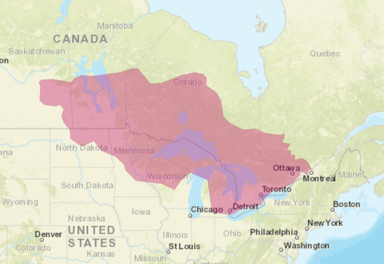

The Anishinaabe are a Native American Tribe in the Great Lakes Region. They are Algonquin speaking people with connections to other Algonquin tribes like the Meskwaki. Their roots orignate to the east coast and migrated to this region after a prophecie forged resaulting in their migration to this new region. They have a deep culture thats nature based and told threw oral tradition.
